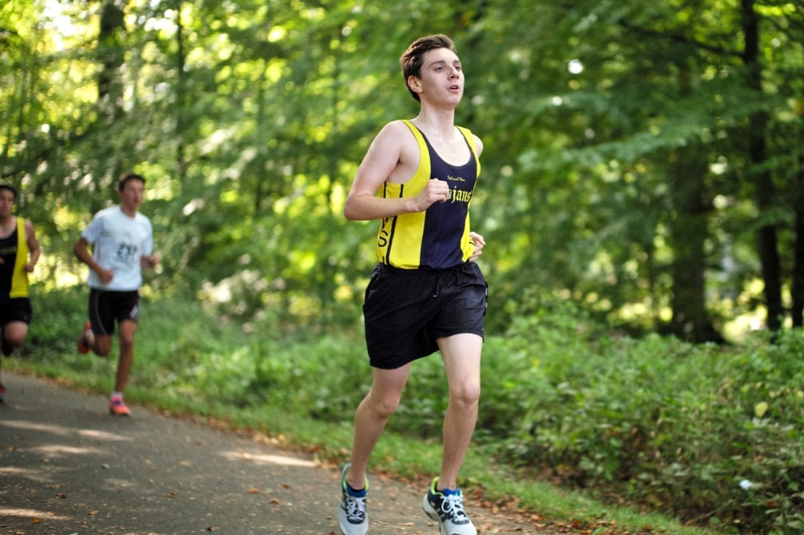
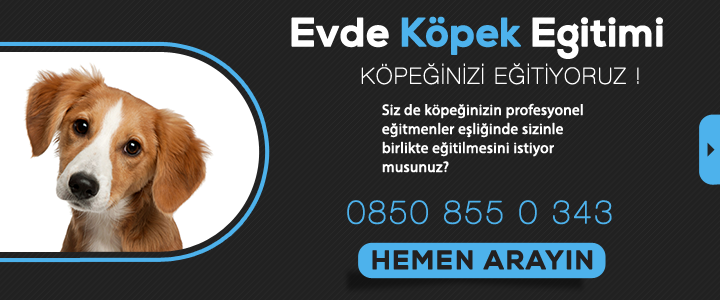

DÜZENLİ SPOR YAPMANIN FAYDALARI

Merhabalar.Bu yazımızda sizin merak ettiğiniz düzenli sporun faydalarından bahsedeceğim.Faydalarını merak ediyorsanız hadi yazımıza geçelim :)
Enerjinizi yükseltir
Yapılan bilimsel araştırmalara göre düzenli spor yapımı kasları harekete geçirdiği için ve efor sarfedildiği için enerjinizi yükseltir ve daha dinamik hissedersiniz.
Zayıflamanıza yardımcı olur
Bazılarımızın kilo sorunu olabiliyor.Yemek yemeleri kontrol edemiyorsunuz,düzene sokamıyorsunuz belki.Bir türlü diyet yapamadan çikolatalara,makarnalara saldırıyorsunuzdur.Bunları ben de yaşıyorum diyorsanız günlük yarım saat yada 1 saat spor yapmak,hem açlık dürtülerinizi kontrol altına alacak hem de zamanla zayıfladığınızı farkedeceksiniz.
-Stresinizi azaltır
Günümüzün artık olmazsa olması stres.Stres bir miktar her insanda olmalı ama gerektiği yerde olmalı.Önemsiz birşeylere stres tepkisi üretmek hem bağışıklılık sistemimize zarar verir hem de anksiyete,depresyon gibi ruhsal hastalıklara yol açar.Düzenli spor yaparak yani yürüyüş,koşu,basketbol,futbol gibi sporlar yapıldığında stresiniz azalır,bağışıklık sisteminiz düzene girer.
Oksijen kapasitenizi artırır
Spor yapmak maximum oksijen kapasitenizi artırır.
Dayanıklılığınızı artırır
Sürekli işleyen ve hareket eden bir vücudunuz olduğu için dayanıklılığın da artar. Çoğu insan bacak,bel ve sırt gibi bölgelerde ağrılar ve kramplar yaşar.Spor sayesinde bunları yaşama ihtimaliniz çok düşük olur. Eğilirken bile bir yerleri ağrıyan değil, hayatının her anında hareketli ve durmak nedir bilmeyen bir kişiye dönüşürsünüz.
Yüksek tansiyona iyi gelir
Yüksek tansiyon hastaları için vazgeçilemez bir nimettir spor.Doktorunuza danışarak size uygun sporu bulup yapmanız tansiyonunuz açısından iyi gelecektir.
Uyku sorununuz ortadan kalkar
Erken de yatsanız geç de yatsanız uyuyamıyorsunuz değil mi? Bir sağa dönüyorsunuz bir sola.Düzenli spor yaparak ve kendinizi yorarak hem stresinizi azalttığınız için hem de yorulduğunuz için rahat bir uyku çekebilirsiniz.
Kaslarınız güçlenir
Hangi sporu yapıyorsanız o çalıştırdığınız kaslarınız güçlenir.
Vücuttaki ağrılarınız azalır
Belki bir diş ağrınız vardır,belki bir yerinizde şişlik vardır o ağrı yapıyordur.Spor acılarınızı ve ağrılarınızı dindirmeye yardımcı olur.
